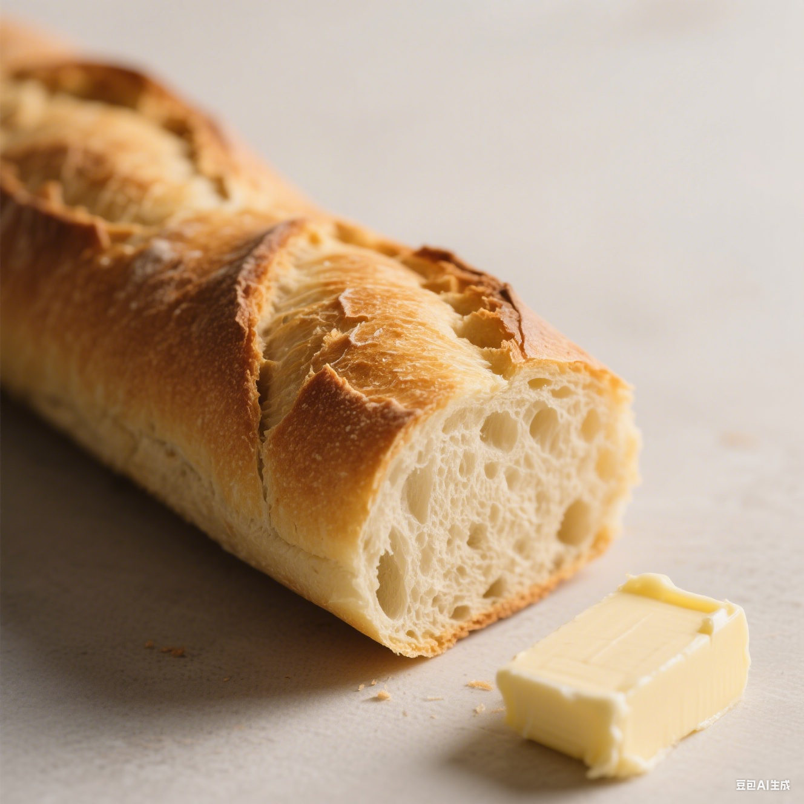
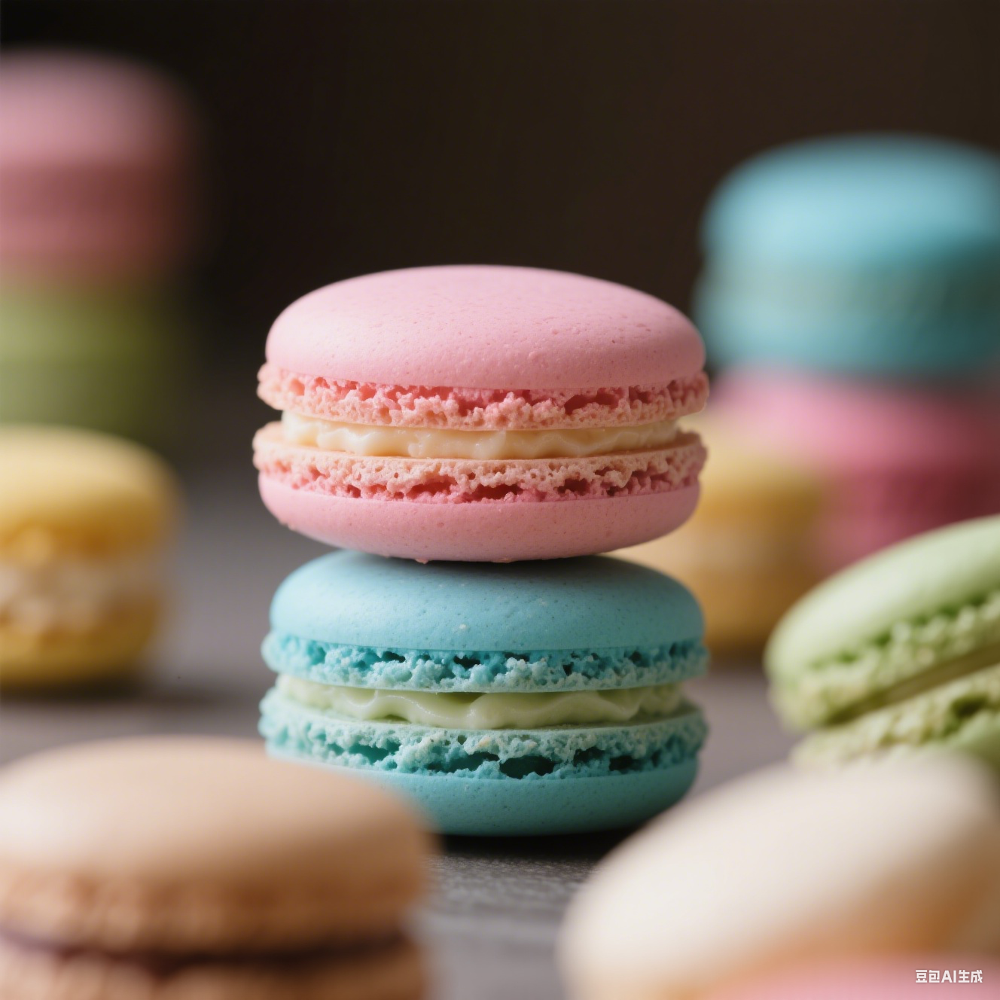
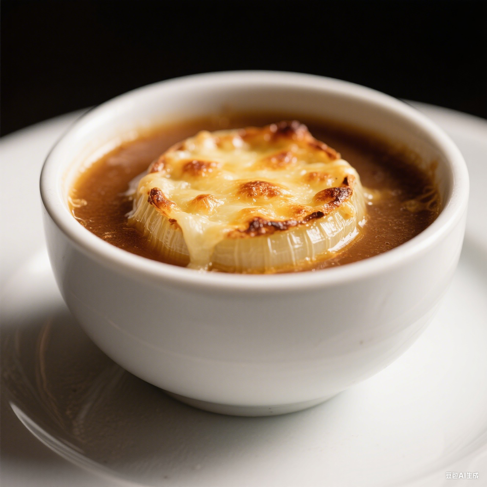
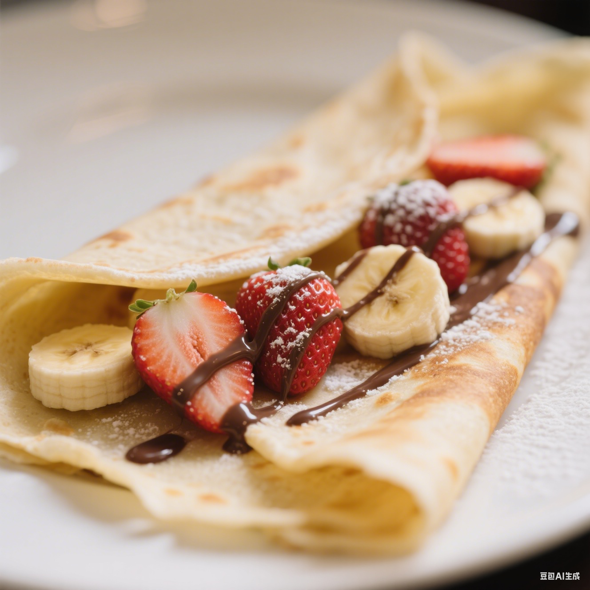

美食

推荐指数：⭐⭐⭐⭐
法式长棍面包
表皮金黄酥脆，内部组织柔软有弹性，气孔细密，散发着麦香
- 巴黎
- 4 欧元 / 根

推荐指数：⭐⭐⭐
马卡龙
外壳酥脆，内馅柔软，口感丰富，色彩缤纷，甜而不腻
- 巴黎
- 2 欧元 / 个

推荐指数：⭐⭐⭐⭐
法式洋葱汤
汤汁浓郁醇厚，洋葱的甜味与奶酪的咸香完美融合，表面的奶酪烤至金黄焦脆
- 巴黎
- 8 欧元 / 份

推荐指数：⭐⭐⭐⭐⭐
可丽饼
饼皮薄如蝉翼，柔软细腻，搭配新鲜水果和巧克力酱，酸甜可口
- 巴黎
- 6 欧元 / 份